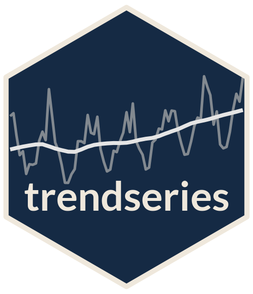
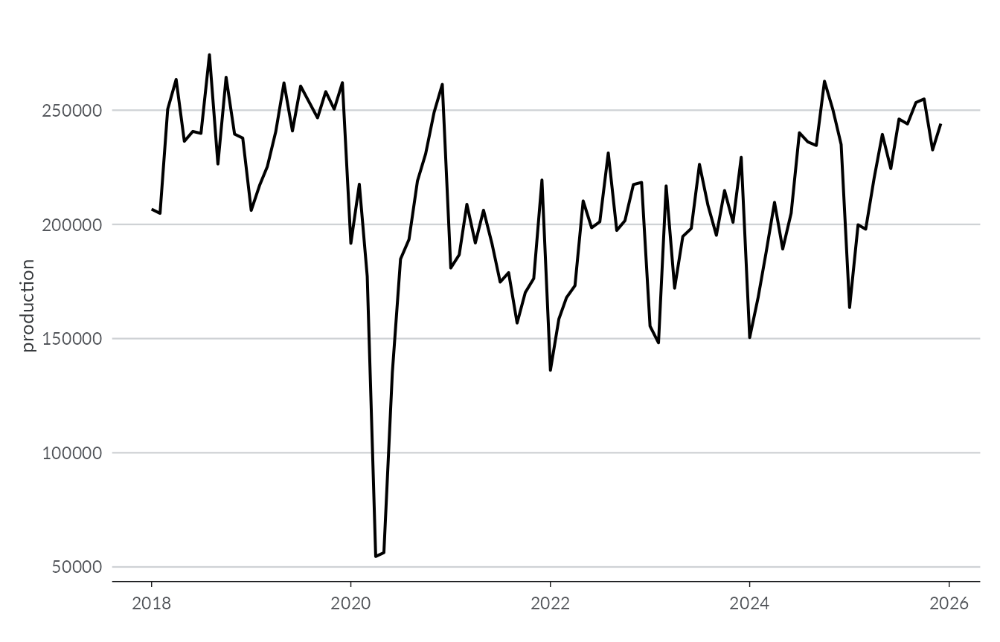
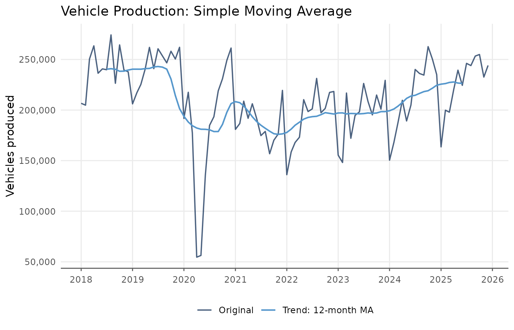
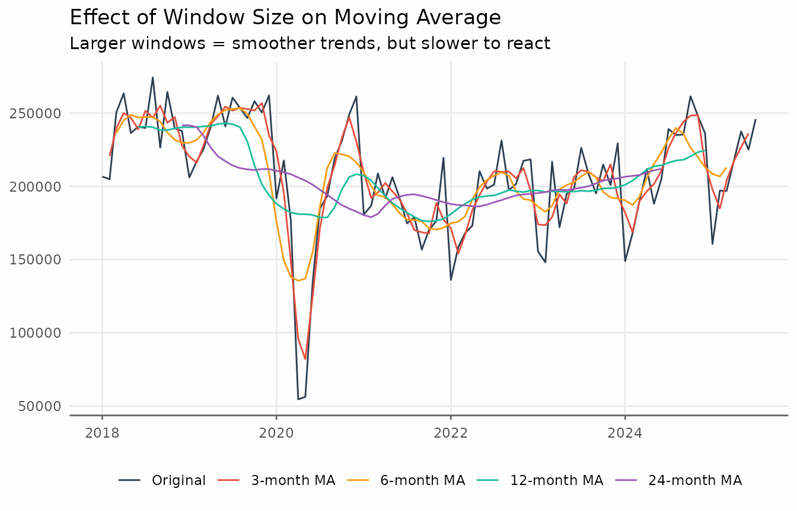
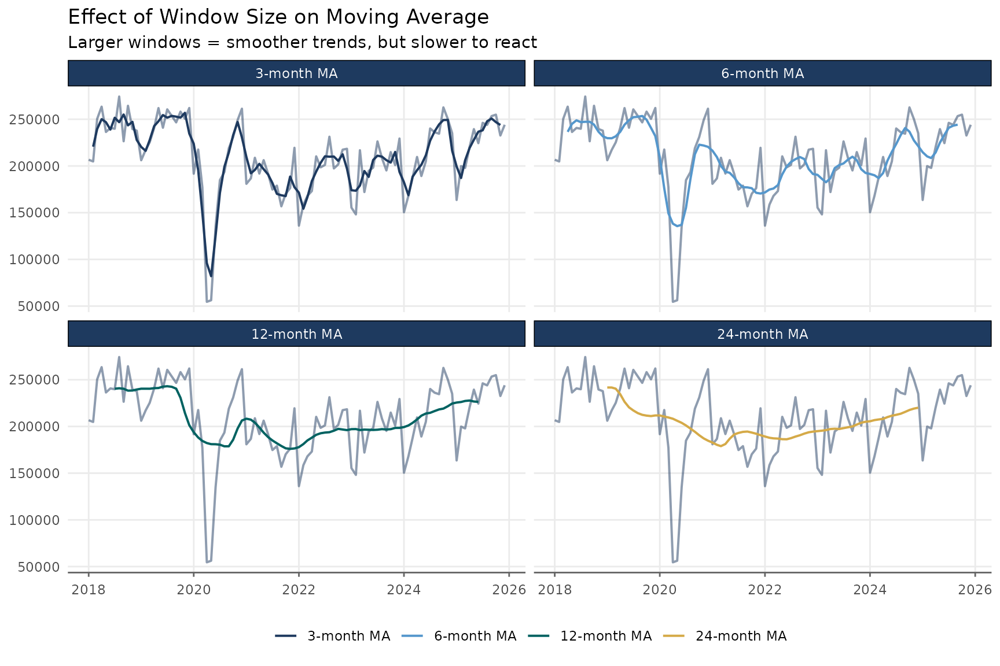
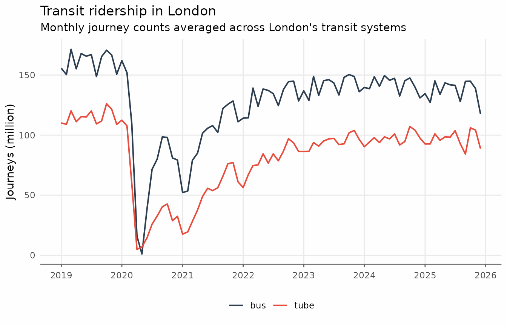
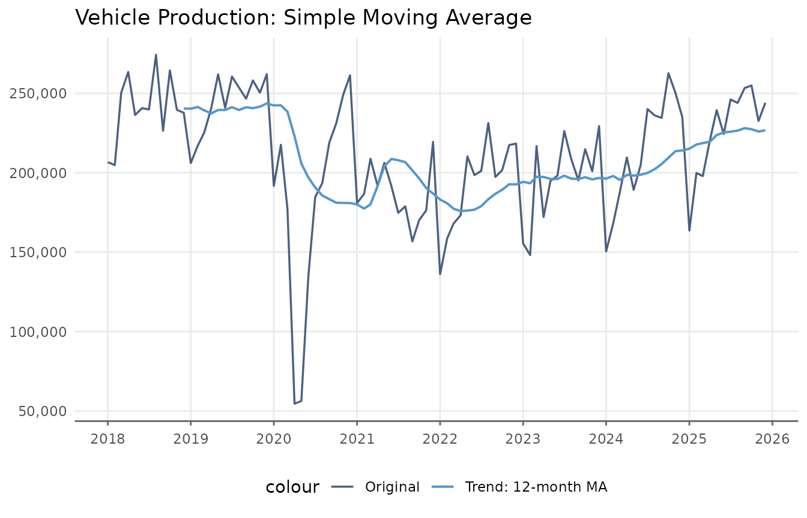
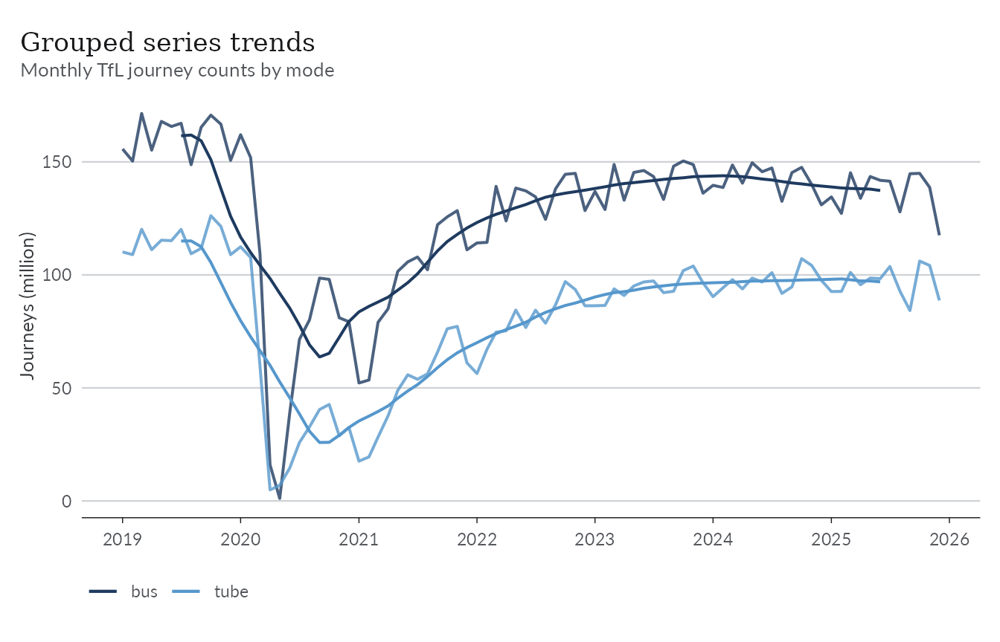

Moving Averages for Trend Analysis
Source:vignettes/moving-averages.Rmd
moving-averages.RmdMoving Averages
Moving averages are one of the most intuitive and widely-used tools for extracting trends from time series data. The basic idea is simple: average nearby observations to smooth out random fluctuations.
Simple example
To recreate the plots from this tutorial use
theme_series below.
theme_series <- theme_minimal(paper = "#fefefe") +
theme(
legend.position = "bottom",
panel.grid.minor = element_blank(),
strip.background = element_rect(fill = "#2c3e50"),
strip.text = element_text(color = "#fefefe"),
axis.ticks.x = element_line(color = "gray40", linewidth = 0.5),
axis.line.x = element_line(color = "gray40", linewidth = 0.5),
# Use colors
palette.colour.discrete = c(
"#2c3e50",
"#e74c3c",
"#f39c12",
"#1abc9c",
"#9b59b6"
)
)Let’s start with vehicle production data. This series is packaged
with trendseries and shows the amount of vehicles produced
in Brazil per month.
# Using the 'vehicles' dataset (ships with trendseries)
vehicles_recent <- vehicles |>
# Only use data after 2018
filter(date >= as.Date("2018-01-01"))
ggplot(vehicles_recent, aes(date, production)) +
geom_line(lwd = 0.7) +
theme_series
Applying augment_trends() to the vehicles
dataset creates a new column called trend_ma.
# Apply a moving average trend
vehicles_trend <- augment_trends(
vehicles_recent,
value_col = "production",
methods = "ma",
window = 12
)
vehicles_trend
#> # A tibble: 96 × 3
#> date production trend_ma
#> <date> <dbl> <dbl>
#> 1 2018-01-01 206675 NA
#> 2 2018-02-01 204831 NA
#> 3 2018-03-01 250423 NA
#> 4 2018-04-01 263490 NA
#> 5 2018-05-01 236388 NA
#> 6 2018-06-01 240714 240386.
#> 7 2018-07-01 239856 240879.
#> 8 2018-08-01 274312 240348.
#> 9 2018-09-01 226447 238350.
#> 10 2018-10-01 264434 238466.
#> # ℹ 86 more rowsWe can visualize this trend using ggplot2.
ggplot(vehicles_trend, aes(date)) +
geom_line(aes(y = production, color = "Original"), lwd = 0.6, alpha = 0.8) +
geom_line(aes(y = trend_ma, color = "Trend: 12-month MA"), lwd = 0.8) +
scale_x_date(date_breaks = "1 year", date_labels = "%Y") +
scale_y_continuous(labels = scales::label_comma()) +
labs(x = NULL, y = NULL, title = "Vehicle Production: Simple Moving Average") +
theme_series
The augment_trends function accepts a vector of values
for window. Each window size produces its own column:
trend_ma_3, trend_ma_6,
trend_ma_12, trend_ma_24.
# Apply different window sizes
windows_to_test <- c(3, 6, 12, 24)
vehicles_trend <- vehicles_recent |>
augment_trends(
value_col = "production",
methods = "ma",
window = windows_to_test
)
vehicles_trend
#> # A tibble: 96 × 6
#> date production trend_ma_3 trend_ma_6 trend_ma_12 trend_ma_24
#> <date> <dbl> <dbl> <dbl> <dbl> <dbl>
#> 1 2018-01-01 206675 NA NA NA NA
#> 2 2018-02-01 204831 220643 NA NA NA
#> 3 2018-03-01 250423 239581. 236519. NA NA
#> 4 2018-04-01 263490 250100. 245074. NA NA
#> 5 2018-05-01 236388 246864 248866. NA NA
#> 6 2018-06-01 240714 238986 246946. 240386. NA
#> 7 2018-07-01 239856 251627. 247288. 240879. NA
#> 8 2018-08-01 274312 246872. 247309. 240348. NA
#> 9 2018-09-01 226447 255064. 244254. 238350. NA
#> 10 2018-10-01 264434 243476 236684. 238466. NA
#> # ℹ 86 more rowsFor plots with more series, reshaping the data to a “tidy” long format is more convenient.
# Prepare for plotting
plot_data <- vehicles_trend |>
pivot_longer(
cols = c(production, starts_with("trend_ma")),
names_to = "method",
values_to = "value"
) |>
mutate(
method = factor(
method,
levels = c("production", paste0("trend_ma_", c(3, 6, 12, 24))),
labels = c(
"Original",
"3-month MA",
"6-month MA",
"12-month MA",
"24-month MA"
)
)
)
# Plot
ggplot(plot_data, aes(date, value, color = method)) +
geom_line() +
labs(
title = "Effect of Window Size on Moving Average",
subtitle = "Larger windows = smoother trends, but slower to react",
x = NULL,
y = NULL,
color = NULL
) +
theme_series
Notice how the 24-month MA is very smooth but lags behind changes, while the 3-month MA tracks the data closely but still shows some fluctuation.
augment_trends supports different alignments via the
align parameter.
vehicles_trend <- augment_trends(
vehicles_recent,
value_col = "production",
methods = "ma",
window = 12,
align = "right"
)
ggplot(vehicles_trend, aes(date)) +
geom_line(aes(y = production, color = "Original"), lwd = 0.6, alpha = 0.8) +
geom_line(aes(y = trend_ma, color = "Trend: 12-month MA"), lwd = 0.8) +
scale_x_date(date_breaks = "1 year", date_labels = "%Y") +
scale_y_continuous(labels = scales::label_comma()) +
labs(x = NULL, y = NULL, title = "Vehicle Production: Simple Moving Average") +
theme_series
Grouped series
Working with multiple time series is straightforward. The
augment_trends function accepts a group_cols
argument to apply methods to each group independently. The data must be
in “tidy” long format. Here we use the
transit_london_monthly dataset, which aggregates ridership
by Bus and Train (tube).
transit <- transit_london_monthly
ggplot(transit, aes(date_month, journey_monthly, color = transit_mode)) +
geom_line(lwd = 0.7) +
scale_x_date(date_breaks = "1 year", date_labels = "%Y") +
scale_y_continuous(labels = scales::label_comma(scale = 1e-6)) +
labs(
x = NULL,
y = "Journeys (million)",
title = "Transit ridership in London",
subtitle = "Monthly journey counts averaged across London's transit systems",
color = NULL
) +
theme_series
transit_trends <- augment_trends(
transit,
date_col = "date_month",
value_col = "journey_monthly",
group_cols = "transit_mode",
methods = "ma",
window = 12
)
ggplot(transit_trends, aes(date_month, color = transit_mode)) +
geom_line(aes(y = journey_monthly), lwd = 0.7, alpha = 0.8) +
geom_line(aes(y = trend_ma), lwd = 0.8) +
scale_x_date(date_breaks = "1 year", date_labels = "%Y") +
scale_y_continuous(labels = scales::label_comma(scale = 1e-6)) +
labs(
x = NULL,
y = "Journeys (million)",
title = "Grouped series trends",
subtitle = "Monthly journey counts averaged across London's transit systems",
color = NULL
) +
theme_series
Related methods
Other window-based smoothing methods are available in
trendseries, selected via the methods
parameter:
- Moving median
methods = "median". - Weighted moving average
methods = "wma". - Exponentially weighted moving average
methods = "ewma". - Spencer moving average
methods = "spencer". - Triangular moving average
methods = "triangular".
These different methods can be combined in a single call to
augment_trends().
transit_trends <- augment_trends(
transit,
date_col = "date_month",
value_col = "journey_monthly",
group_cols = "transit_mode",
methods = c("ma", "median", "spencer")
)As with multiple windows, augment_trends creates a new
column for each method.
transit_trends
#> # A tibble: 168 × 6
#> date_month transit_mode journey_monthly trend_ma trend_median trend_spencer
#> <date> <chr> <dbl> <dbl> <dbl> <dbl>
#> 1 2019-01-01 bus 155713000 NA 155713000 155453484.
#> 2 2019-02-01 bus 150361000 NA 155713000 158189068.
#> 3 2019-03-01 bus 171440000 NA 155713000 160595589.
#> 4 2019-04-01 bus 155185000 NA 165672000 162514135.
#> 5 2019-05-01 bus 167923000 NA 167075000 163487621.
#> 6 2019-06-01 bus 165672000 161553000 165672000 163582471.
#> 7 2019-07-01 bus 167075000 161880208. 165672000 163404607.
#> 8 2019-08-01 bus 148747000 159353542. 165672000 163807991.
#> 9 2019-09-01 bus 165315000 150961208. 166687000 165322150
#> 10 2019-10-01 bus 170688000 138208583. 165315000 167443597.
#> # ℹ 158 more rowsFinally, we can visualize these different trends using
ggplot2.
transit_trends <- augment_trends(
transit,
date_col = "date_month",
value_col = "journey_monthly",
group_cols = "transit_mode",
methods = c("ma", "median", "spencer")
)
transit_trends_long <- transit_trends |>
pivot_longer(
cols = c(starts_with("trend_")),
names_to = "method",
names_repair = "unique"
) |>
mutate(
method = factor(
method,
levels = c(
"trend_ma",
"trend_median",
"trend_spencer"
),
labels = c(
"12-month MA",
"5-month median",
"15-term Spencer"
)
)
)
ggplot() +
geom_line(
data = transit_trends,
aes(date_month, journey_monthly),
lwd = 0.5,
alpha = 0.8
) +
geom_line(
data = transit_trends_long,
aes(date_month, value, color = method),
lwd = 0.8
) +
facet_wrap(vars(transit_mode, method), ncol = 3) +
scale_x_date(date_breaks = "1 year", date_labels = "%Y") +
scale_y_continuous(labels = scales::label_comma(scale = 1e-6)) +
labs(
x = NULL,
y = "Journeys (million)",
title = "Grouped series trends",
subtitle = "Monthly journey counts averaged across London's transit systems",
color = NULL
) +
theme_series +
theme(
axis.text.x = element_text(angle = 90)
)